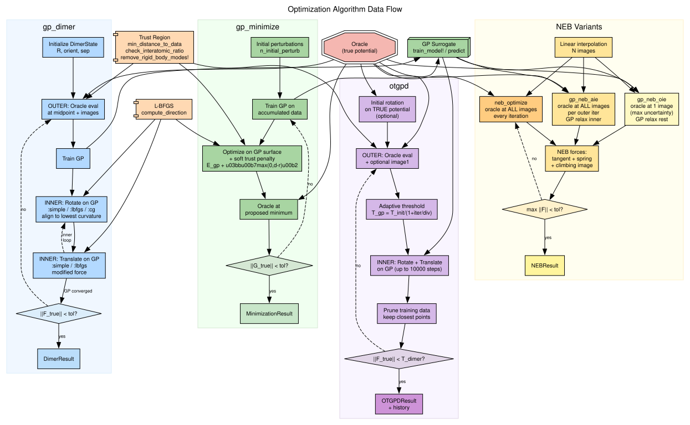
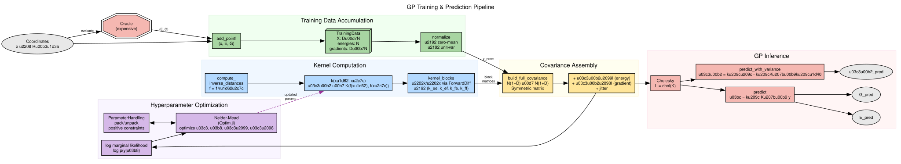
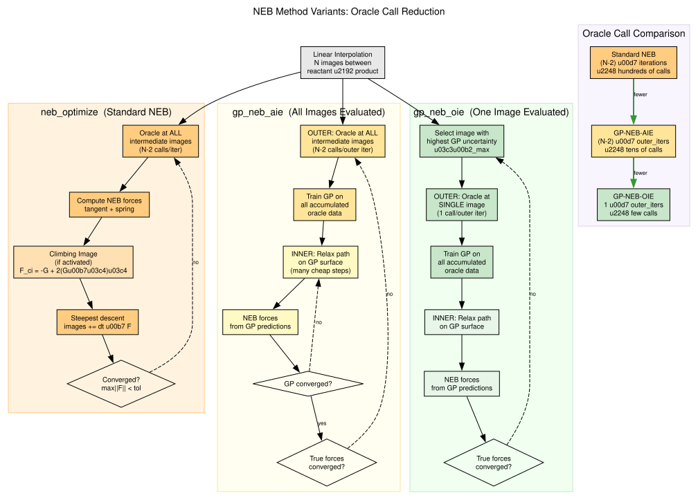

Algorithm Pseudocode
Pseudocode for all GP-guided optimization methods in ChemGP.
Optimizer Data Flow

GP Training & Prediction Pipeline

GP Minimization (gp_minimize)
Input: oracle, x_init, kernel, config
Output: MinimizationResult
1. Generate initial training data (perturbations around x_init)
2. for outer_iter = 1:max_outer_iter
a. Train GP on accumulated data
b. Inner loop (on GP surface):
- Predict gradient at current x
- Take gradient descent step
- Check: |G_gp| < T_gp → break
- Check: trust radius exceeded → scale step, break
c. Evaluate oracle at new position
d. Add to training data
e. Check: |G_true| < T_force → CONVERGEDGP-Dimer (gp_dimer)
Input: oracle, x_init, orient_init, kernel, config
Output: DimerResult
1. Initialize DimerState(R, orient, dimer_sep)
2. Generate initial training data
3. for outer_iter = 1:max_outer_iter
a. Train GP on accumulated data
b. Reset L-BFGS/CG state
c. Inner loop (on GP surface):
- Rotate: align with lowest curvature mode
(:lbfgs/:cg → search direction + Newton angle opt)
(:simple → direct angle estimate)
- Translate: modified force F_trans = G - 2(G·n̂)n̂
Negative curvature: L-BFGS step
Positive curvature: fixed step along -G·n̂
- Check: |F_trans| < T_gp → break
- Check: trust radius → break
d. Oracle at converged position (+ image 1)
e. Check: |F_true| < T_dimer AND C < 0 → CONVERGEDOTGPD (otgpd)
Input: oracle, x_init, orient_init, kernel, config
Output: OTGPDResult
Initialize: HODState (if use_hod), training data, dimer state
Phase 1 -- Initial Rotation (optional):
for rot = 1:max_initial_rot
Evaluate oracle at midpoint + image 1
Compute F_rot, curvature C
Modified Newton angle optimization (parabolic fit):
d_theta = 0.5 * atan(|F_rot|/|C|)
Trial rotation, evaluate oracle
Fit F(theta) = a1*cos(2*theta) + b1*sin(2*theta)
theta* = 0.5 * atan(b1/a1)
Check: d_theta < T_angle -> break
Phase 2 -- Main GP Loop:
for outer_iter = 1:max_outer_iter
Prune training data (if max_training_points > 0)
FPS subset selection:
fps_size = hod_state.current_fps_history (dynamic via HOD)
Select fps_latest_points most recent + FPS from rest
td_sub = extract_subset(td, selected_indices)
Compute barrier strength: beta = min(1e-4 + 1e-3*n_sub, 0.5)
Train GP (two-path strategy):
IF kernel isa AbstractMoleculeKernel:
Energy shift (not normalize), fix_noise=true
Warm-start kernel from previous iteration
NLL with variance barrier (barrier_strength = beta)
ELSE:
Normalize, optimize noise as free parameter
Optimize hyperparams on td_sub, rebuild model on full td
HOD check:
Extract log-space hyperparams, count sign-flips
If flip_ratio > threshold -> enlarge FPS subset
Adaptive threshold: T_gp = max(min(F_history)/divisor, T/10)
Adaptive trust: T_trust = sigmoid(n_data/n_atoms) or fixed
Inner loop (on GP surface):
Rotate, translate (L-BFGS or simple)
Check: |F_trans| < T_gp -> GP converged
Check: trust_distance(R_new, td, metric) > T_trust -> scale step
Check: interatomic ratio -> reject distortion
Oracle evaluation (+ image 1 if eval_image1)
Check: |F_true| < T_dimer AND C < 0 -> CONVERGEDNEB Variants Overview

Standard NEB (neb_optimize)
Input: oracle (or oracle pool), x_start, x_end, config
Output: NEBResult
1. Linear interpolation -> N images
2. Evaluate oracle at all images (parallel if pool)
3. for iter = 1:max_iter
a. Compute tangent at each image (improved method):
- Monotonic increase: tau = R_{i+1} - R_i
- Monotonic decrease: tau = R_i - R_{i-1}
- Extremum: energy-weighted average
b. NEB force at each image:
- Standard: F = -G_perp + F_spring_parallel
- Climbing image: F = -G + 2(G . tau_hat) tau_hat
c. Steepest descent update
d. Re-evaluate oracle at all images (parallel if pool)
e. Check: max|F| < conv_tol -> CONVERGEDGP-NEB-AIE (gp_neb_aie)
Input: oracle (or oracle pool), x_start, x_end, kernel, config
Output: NEBResult
1. Linear interpolation, evaluate oracle at all images (parallel if pool)
2. Initialize prev_kern = nothing (for warm-start)
3. for outer_iter = 1:max_outer_iter
a. Compute true NEB forces, check convergence
b. Train GP on accumulated data:
- Warm-start: reuse prev_kern if available
- Molecular kernel: energy shift, fix_noise, regularized noise
- Other kernel: normalize, optimize noise
prev_kern = model.kernel
c. Inner loop: relax path on GP surface
- GP-predict E, G at all intermediate images
- Compute NEB forces from GP predictions
- Steepest descent on GP
d. Evaluate oracle at ALL new image positions (parallel if pool)
e. Add to training data (dedup by min distance)GP-NEB-OIE (gp_neb_oie)
Input: oracle, x_start, x_end, kernel, config
Output: NEBResult
1. Linear interpolation, evaluate midpoint
2. Initialize prev_kern = nothing (for warm-start)
3. for outer_iter = 1:max_outer_iter
a. Train GP on accumulated data (warm-start from prev_kern)
- If max_gp_points > 0: FPS subset for hyperparameter training
- If rff_features > 0 and MolInvDistSE and N > M_subset:
Build RFF model on ALL data using trained hyperparameters
b. Predict E, G at all images (from GP or RFF model)
c. Compute predictive variance at all images
d. Select image i* = argmax(variance_E)
e. Evaluate oracle at image i* (single call, no parallelism)
f. Inner loop: relax path on GP surface
g. Check convergence (all images evaluated + max|F| < tol)Modified Newton Rotation
Input: state, model, F_rot_direction, config
Output: curvature_estimate
1. C₀ = curvature at current orientation
2. dθ = 0.5 * atan(|F_rot|/|C₀|)
3. Trial rotation: orient_trial = cos(dθ)·orient + sin(dθ)·F̂_rot
4. Evaluate GP at trial image 1 position
5. Parabolic fit:
F₀ = F_rot·F̂_rot (projection at θ=0)
F_dθ = F_rot_trial·F̂_rot_trial (projection at θ=dθ)
a₁ = (F_dθ - F₀·cos2dθ) / sin2dθ
b₁ = -F₀/2
6. θ* = 0.5 * atan(b₁/a₁), adjust for minimum
7. Apply rotation: orient_new = cos(θ*)·orient + sin(θ*)·F̂_rotL-BFGS Two-Loop Recursion
Input: history (s,y pairs), gradient g
Output: search direction d
1. q = g
2. for i = m, m-1, ..., 1: (newest to oldest)
α_i = (s_i·q) / (y_i·s_i)
q = q - α_i·y_i
3. γ = (s_m·y_m) / (y_m·y_m) (Rayleigh quotient scaling)
4. d = γ·q
5. for i = 1, 2, ..., m: (oldest to newest)
β = (y_i·d) / (y_i·s_i)
d = d + (α_i - β)·s_i
6. return d